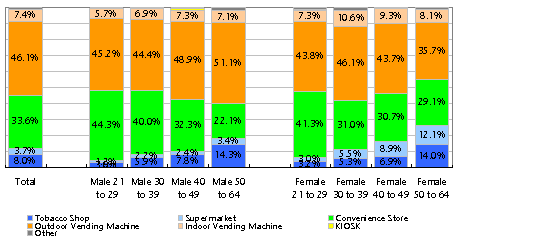

21
PURCHASING BEHAVIOR
Source:
GCS 200
７
YTD
（
Jan-Dec)
Ｑ：
In which one of the following outlets did you buy your cigarettes most often
？

MOST FREQUENT PURCHASING OUTLET
これは「どこで一番タバコを買っていますか」という質問に対する回答をまとめたものです。
どの年齢層においても、最も頻度が高い購入場所は「路面にある自動販売機」です。
男女かかわらず、若い人はコンビニで買うという人が多い。年齢が高いとタバコ屋の割合が多い。
女性の特徴的な傾向は、スーパーで買うと言う人の割合が比較的高いことです。これは主婦層の意見が大きく影響しているものと思われます。